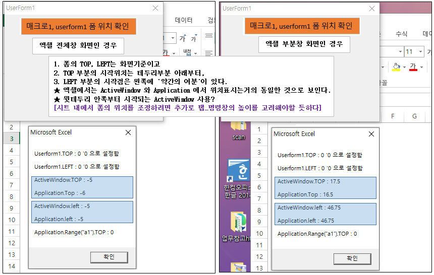
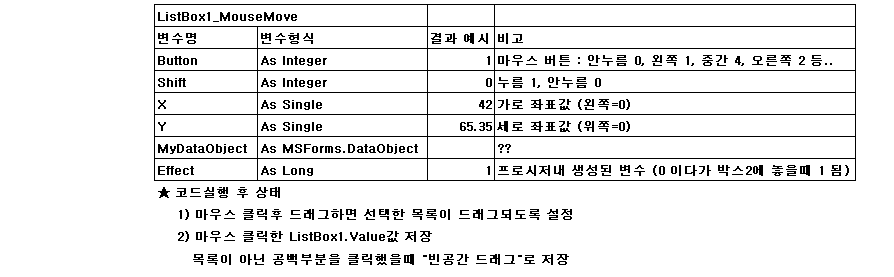
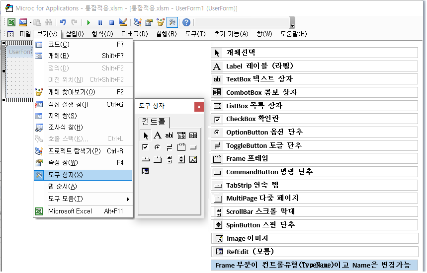
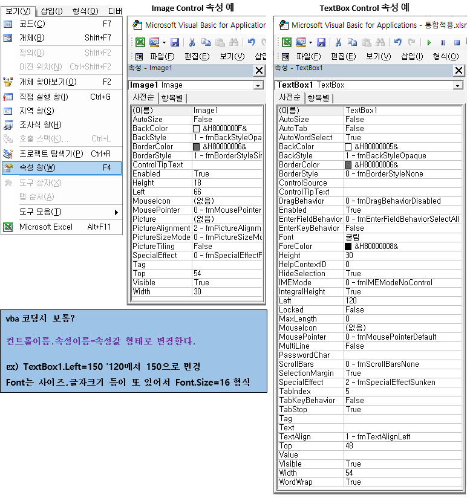
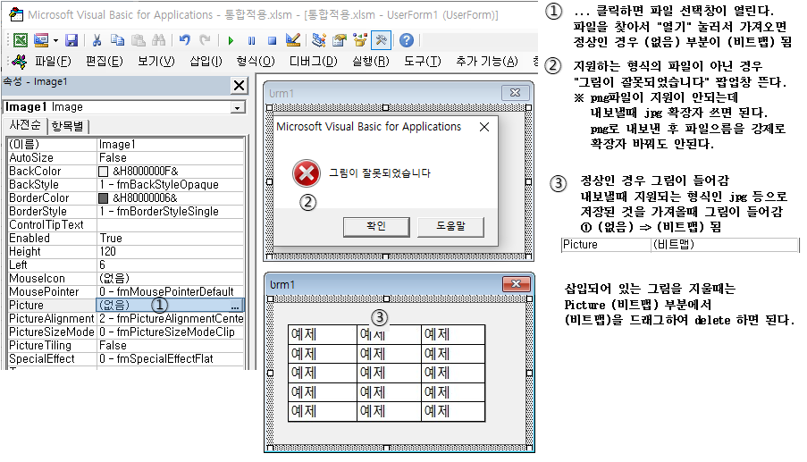
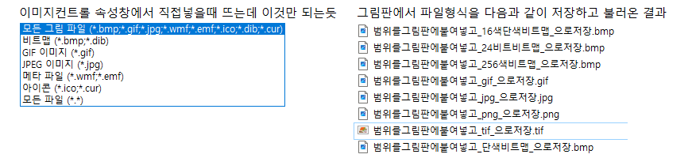
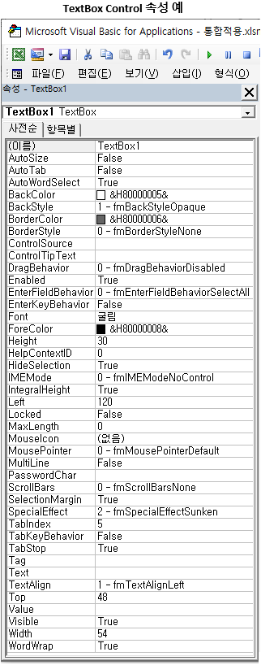

도형 > 종류, 만들기
도형 > 도형 종류 확인 Type, Dim 도형 As Shape : Set 도형 = 1개의 도형
도형 > 도형의 선택/삭제, 도형 선택 vba 코딩 참고
도형 > 위치확인, 다중선택 예제
도형 > 내용확인, 분석
그림 > 화면복사 방법, 폼에 그림으로 넣었을때 어떻게 보이는지
그림 > vba코딩, 범위를 그림으로 복사후 폴더에 저장, Insert, LoadPicture, Export
폼 > 폼위치, Top, Left
폼 > Control 이벤트 동작들, 컨트롤, Initialize, Activate
폼 > Control관련_1, 유형, 이름, 속성종류 MsgBox TypeName(컨트롤)
폼 > Control > 공통위주로 TextBox 속성으로 확인, 한영전환, IME모드
폼 > Control > Image, 폼 내 Image 넣기
vba 변수1 > 선언, 변수이름 규칙, 데이터형(Type), 프로시저
vba 변수2 > As 데이터형(Type), Type들
주요 문자열 코드 > 큰따옴표, 엔터, 줄바꿈(vblf), chr
작성중 InStr, InStrRev 찾기
작성중 Search 찾기
Find찾기, Replace바꾸기
Column > ColumnWidth, 열숨기기/보기, Join, Split, Array
copy_cut_paste,카피_컷_붙여넣기
배열_선언 > 셀범위, Array, Ubound, Lbound, Split, Join, Transpose
배열_Range에서 > 배열을 Range에 적용시 어떻게 표시되는지
줄바꿈_배분정렬과wordBreak_overflow_nowarp_whitespace_aligntop_줄간격
프로시저 : 명령문의 집합 Private Sub(현재 모듈에서 호출가능), Sub(프로젝트 전역에서 호출가능)
변수의 선언 : [키워드] 변수명 [As 데이터형]
• [키워드] 4종 : Dim, Static, Private, Public, 편집화면에서 파란색으로 표시된다.
- Static 변수명 As Integer : 프로시저 외부에서 선언시 에러
- Public 변수명 As Integer : 프로시저 내부에서 선언시 에러
- 키워드 : vba에서 기능이 미리 정의된, 의미 있는 단어
- Dim : (변수)프로시저 바깥에서 선언하면 모듈안의 프로시저에서 기억
- Dim : (변수)프로시저 내부에서 선언하면 프로시저 종료시 초기화
- Static(사전:정적인) : (변수)프로시저 안에서 선언, 프로시저 종료시 기억됨, 현재 프로시저에서만 해당
- Private(사전:사적인) : (프로시저) Private Sub 는 현재 모듈에서만 Call 가능
- Public(사전:공공의) : (변수)프로시저 바깥에서 선언, 프로젝트 전역에서 사용 및 기억

Dim int1, int2, int3 As Integer 라고 선언시
• int3만 Integer이고 나머진 variant형으로 선언이 되므로 주의하여야 한다.
• 모두 Integer형식으로 선언하려면 : Dim int1 As Integer, int2 As Integer, int3 As Integer
• As 데이터형 : 생략 가능, 생략시 데이터형이 Variant형으로 지정됨.
변수 이름 규칙
• 첫번째 문자는 숫자 안됨
• 밑줄(_) 이외의 특수문자(.,,,!,@,#,$,-,[,] 등)을 사용할 수 없음
• Visual Basic의 함수, 명령문, 메서드와 같은 키워드를 이름으로 사용할 수 없음.
ex : Dim dim As Integer
• 길이는 255자를 넘을 수 없음
• 같은 수준의 범위에서는 이름을 중복하여 지정할 수 없음.
• 대/소문자 구분하지 않음
- 변수명을 AbcDE 로 선언하고 사용할 때, abcde로 사용하면 자동으로 AbcDE로 변경되는데
변수명을 정확히 사용하고 있다는 것을 인지할 수 있음
VBA(Visual Basic for Applications)에서는 변수명마다 type을 지정해주어야 한다.
• Dim lastTime, nextTime, allTimes() As Date
변수형을 따로 지정하지 않으면 lastTime, nextTime은 Variant형으로 지정된다.
allTimes() As Date만 Date 타입으로 지정된다.
• vba에서 모두 Date 타입으로 변수를 선언하려면 아래와 같이
Dim lastTime As Date, nextTime As Date, allTimes() As Date
As 데이터형 종류 : ① 문자열, 숫자, 통화, Boolean ② Object ③ Variant
①
Let 변수명 = 값, 기본적으로 Let이 생략된 상태이므로 생략해도 됨②
Set 변수명 = 개체 (개체에는 여러 속성이 있을수 있다)- 개체변수명.속성명 으로 접근할 수 있다. (속성 예 : Name, Type 등등)
③
Variant (변수 대입시에 Object인지 아닌지 결정됨)- 변수대입시 결정된 변수가 Object(ex:Image개체인 경우), Set 사용 안하면 에러
• Object는 개체이고 개체의 종류는 여러가지 (Range, Worksheet, Workbook, Image, Chart, Picture 등)
변수에 값을 대입시, Let(생략 가능), Set(생략시 에러 : 개체일때 Set 생락하면 안된다는 의미)
•

참고사항
• 도형의 이름(Name)이 같아도 상관없음 [index가 다름]
• Shapes(모든도형), DrawingObjects, Pictures 객체의 상위 객체는 시트(Activesheet)
• 범위.Shapes 형태로 상위 객체를 Range로 사용할 수 없다
• 도형의 Type등을 확인할 때는 도형을 의미하는 변수, 또는 도형을 의미하는 표현식이어야 한다.
- 예 : 도형을 select하였을때 selection.Type이 안되는 경우 => 도형변수.Type 형태로 사용해야?
참고사항
• ActiveSheet.Shapes(순번) : Shapes(모든도형들 중) (순번) 1부터 시작되는 순번의 도형
• ActiveSheet.Shapes.Range(배열) : Shapes(모든도형들 중) 배열에 담긴 도형들
• ActiveSheet.Shapes.Range(Array()) : () 안의 값이 숫자면 순번이고 문자열이면 Name이다
- ActiveSheet.Shapes.Range(Array(1, 3)).Select
- ActiveSheet.Shapes.Range(Array("그림 8", "그림 10")).Select
- Dim 배열(1 to 2) As String / 배열(1)="그림 8" / 배열(2)="그림 10" / ActiveSheet.Shapes.Range(Array(배열)).Select
참고사항. Shapes대신 DrawingObjects와 Pictures
• 텍스트상자만, AutoShape도형만 선택하는것은 모르겠음.
• ActiveSheet.DrawingObjects.Delete '모든 DrawingObjects 삭제 (그림, 도형, 텍스트박스 등)
• ActiveSheet.Pictures.Delete '그림만 삭제
• ActiveSheet.Shapes의 경우는 : ActiveSheet.Shapes.SelectAll로 전체선택후 Selection.Delete
- Shapes객체가 특이하다 (SelectAll로 선택하는 것과 Selection.Delete하는 것이)
도형의 종류 (ActiveSheet.Shapes.AddShape는 MsoAutoShapeType (Type번호 1)의 도형을 만드는 코드다)
• MsoShapeType이 여기서는 큰분류이며 만들때는 각각 모양에 따른 문자열(순번으로도 표현 가능)이 다르다.
'MsoShapeType
번호
이름
'MsoShapeType
번호
이름
'msoAutoShape
1
AutoShape
'msoCallout
2
Callout
'msoChart
3
Chart
'msoComment
4
Comment
'msoDiagram
21
Diagram
'msoEmbeddedOLEObject
7
Embedded OLE object
'msoFormControl
8
Form control
'msoFreeform
5
Freeform
'msoGroup
6
Group
'msoIgxGraphic
24
SmartArt graphic
'msoInk
22
Ink
'msoInkComment
23
Ink comment
'msoLine
9
Line
'msoLinkedOLEObject
10
Linked OLE object
'msoLinkedPicture
11
Linked picture
'msoMedia
16
Media
'msoOLEControlObject
12
OLE control object (ActiveX controls)
'msoPicture
13
Picture
'msoPlaceholder
14
Placeholder
'msoScriptAnchor
18
Script anchor
'msoShapeTypeMixed -
2
Mixed shape type
'msoTable
19
Table
'msoTextBox
17
Text box
'msoTextEffect
15
Text effect
msoAutoShape 타입 도형(Type번호 1, 이름 AutoShape) 만들기 코드
• ActiveSheet.Shapes.AddShape(MsoAutoShapeType[타입이름문자열],Left, Top, Width, Height).Select
• MsoAutoShapeType 부분에 숫자를 넣으면 생성되는, 해당인덱스의 도형(Type 번호가 아님), 예)1~137까지 된다.

msoTextNpx 타입 도형(Type번호 17, 이름 Text Box) 만들기 코드
• ActiveSheet.Shapes.AddTextbox(msoTextOrientationHorizontal, 266.25, 57.75, 80.25, 29.25).Select
• msoTextOrientationHorizontal 부분에 숫자를 넣으면 1~6까지 된다. 모양이 같아보임
msoChart 타입 도형(Type번호 3, 이름 Chart) 만들기 코드
• ActiveSheet.Shapes.AddChart2(251, xlPie).Select
.Select 가 없으면 에러가 나는 이유?? 관련정보
- 괄호가 있을 때는 함수의 기능을 하여 반환하는 값이 발생하고, (함수가 되므로 반환하는 값을 저장할 변수가 지정되어야 함)
괄호가 없을 때는 명령으로 끝난다. (.Select : 선택하라는 명령)
• .Select 없이 변수를 사용하여 생성만하는 코드
Dim 도형 As Shape
Set 도형 = ActiveSheet.Shapes.AddShape(msoShapeRectangle, 10, 10, 10, 10) '시트에 도형이 만들어짐
• 시트에 만드는 코드 (.Select)
ActiveSheet.Shapes.AddShape(msoShapeRectangle, 34.5, 103.5, 72, 26.25).Select
Left, Top, Width, Height 지정해야하고 '.Select'
• 주요도형 (이름 : 번호 MsoShapeType) (번호=MsoShapeType) (종류에서 더 많은 정보 확인)
- Text box : 17 msoTextBox, AutoShape : 1 msoAutoShape, Picture : 13 msoPicture
도형의 종류를 Type번호 또는, MsoShapeType 으로 확인내기 (종류 참고)
MsgBox ActiveSheet.Shapes(4).Type '13 (Picture), 그림인 경우
If ActiveSheet.Shapes(4).Type = 13 Then
MsgBox "Type : " & ActiveSheet.Shapes(4).Type 'Type : 13"
End If
If ActiveSheet.Shapes(4).Type = msoPicture Then '종류 참고
MsgBox "Type : msoPicture"
End If
• 주요도형 (이름 : 번호 MsoShapeType) (번호=MsoShapeType) (종류에서 더 많은 정보 확인)
- Text box : 17 msoTextBox - AutoShape : 1 msoAutoShape - Picture : 13 msoPicture
도형의 종류를 번호로 Type번호로 확인내기
• Dim 도형 As Shape
For Each 도형 In ActiveSheet.Shapes
If 도형.Type = 17 And LEFT(도형.OnAction, 4) = LEFT(백업파일명, 4) Then 도형.Delete
'도형.OnAction은 도형에 걸린 매크로 이름(문자열)
'코드설명 : 도형.Type=17 : 도형의 종류가 글상자이고
Next
타입이름문자열 알아내기, 맞는지 확인하기 : 시트에 도형이 하나 있다고 가정함
• 그림, 텍스트상자, 챠트 등 모두 Shape 개체이므로 TypeName, TypeOf 결과는 Shape가 됨
• 글상자만듬 : ActiveSheet.Shapes.AddTextbox(msoTextOrientationHorizontal, 266.25, 57.75, 80.25, 29.25).Select
• TypeName, TypeOf Is 타입명 : True/False
MsgBox TypeName(ActiveSheet.Shapes(1)) => Shape
MsgBox TypeOf ActiveSheet.Shapes(1) Is Shape => True 또는 False 반환
If TypeOf ActiveSheet.Shapes(1) Is Shape Then => Type이 Shape라면
Dim 도형 As Shape : Set 도형 = 1개의 도형
• 안되는것 : Set 도형 = ActiveSheet.Shapes.Range(Array("그림 4")) '순번이 없으면 하나로 인식하지 않는다.
- Array() : 배열 안에 여러개가 들어갈 수 있으므로 순번을 넣어야 Array(배열)(순번) 하나로 인식함
- Activesheet(현재시트의).Shapes(모든도형들 중).Range(Array(배열))_배열안에 있는 것들
=>배열 값이 하나라도 순번을 넣어야 하나로 인식함
• 되는것 : Set 도형 = ActiveSheet.Shapes.Range(Array("그림 4"))(1)
ActiveSheet.Shapes.Range(Array()) : 순번을 지정하지 않으면 여러개일 수 있는 배열상태
• 타입이 다른게 있으면 -2 : MsgBox ActiveSheet.Shapes.Range(Array("textbox 1", "그림 4")).Type '그림=13, text box=17
• 타입이 모두 같으면 해당 타입 : MsgBox ActiveSheet.Shapes.Range(Array("그림 2", "그림 4")).Type
• 여러개 선택시 Name은 에러: MsgBox ActiveSheet.Shapes.Range(Array("그림 2", "그림 4")).Name => error!
• 하나 있을때 Name은 가능: MsgBox ActiveSheet.Shapes.Range(Array("그림 2")).Name => 그림 2
• 주요도형 (이름 : 번호 MsoShapeType) (번호=MsoShapeType) (종류에서 더 많은 정보 확인)
- Text box : 17 msoTextBox, AutoShape : 1 msoAutoShape, Picture : 13 msoPicture

도형 선택1 (변수에 담을 때는 .Select 없이)
• 인덱스 번호로 선택 : ActiveSheet.Shapes(1).Select '모든도형들 중, 첫번째 도형 선택
• Activesheet.Shapes.range(Array(배열))(1) : 모든도형들 중, 배열안의 도형들 중, 1번째 도형
• ActiveSheet.Shapes.Range(Array(1, 3)).Select '모든도형들 중, 첫번째와 세번째 도형 선택
• ActiveSheet.Shapes.Range(Array(1, 3))(2).Select '모든도형들 중, 배열안의 도형등 중,두번째도형선택
• Shapes.range(Array()) : 배열 값으로 숫자는 순번이고 이름을 직접 쓸 수도 있다.
- ActiveSheet.Shapes.Range(Array("그림 8", "그림 10")).Select
- 응용 : Dim 배열() As String / ReDim 배열(1 To 2) / 배열(1) = "그림 8" / 배열(2) = "그림 10"
ActiveSheet.Shapes.Range(배열).Select
도형 선택2 / 삭제, 도형의 이름(Name)이 같아도 상관없음 [index가 다름]
• 주요도형 : - Text box : 17 msoTextBox - AutoShape : 1 msoAutoShape - Picture : 13 msoPicture
• 텍스트상자만, AutoShape도형만 선택하는것은 모르겠음.
• ActiveSheet.Shapes의 경우는 : ActiveSheet.Shapes.SelectAll로 전체선택후 Selection.Delete
- ActiveSheet.Shapes.Delete 안됨
- Shapes객체가 특이하다 (SelectAll로 선택하는 것과 Selection.Delete하는 것이)
• ActiveSheet.DrawingObjects.Delete '모든 DrawingObjects 삭제 (그림, 도형, 텍스트박스 등)
• ActiveSheet.Pictures.Delete '그림만 삭제
도형 선택 vba 코딩 참고 (vba 한줄에 여러 명령시 명령마다 ":" 으로 구분)
Sub 그림_글상자_도형_선택예제()
Sheets("SHEET1").Select: Range("A1").Select '선택 해제
ActiveSheet.Shapes.SelectAll '모든 Shape 객체 선택됨
Range("A1").Select '선택 해제
ActiveSheet.DrawingObjects.Select '모든 DrawingObject 선택됨
Range("A1").Select '선택 해제
ActiveSheet.Pictures.Select '그림만 선택, 도형이나 글상자만 선택하는 것은 모르겠음
Range("A1").Select '선택 해제
'Shape의 순번은 확인해야 알 수 있다.
Dim 배열_그림들() As Integer, 배열_글상자들() As Integer, 배열_도형들() As Integer
Dim 그림순번 As Byte, 글상자순번 As Byte, 도형순번 As Byte
Dim 인덱스 As Byte, sh As Shape
For Each sh In ActiveSheet.Shapes
인덱스 = 인덱스 + 1 '첫도형의 인덱스 1
If sh.Type = msoPicture Then 그림순번 = 그림순번 + 1 '번호로는 13, 그림이라면
If sh.Type = msoTextBox Then 글상자순번 = 글상자순번 + 1 '번호로는 17, 글상자라면
If sh.Type = msoAutoShape Then 도형순번 = 도형순번 + 1 '번호로는 1, 글상자라면
' Name을 바꿀수 있는데 같은 이름이어도 상관이 없다.
If sh.Type = msoPicture Then 'msoPicture 대신에 13 가능, If sh.Type = 13 Then
ReDim Preserve 배열_그림들(1 To 그림순번): 배열_그림들(그림순번) = 인덱스 '인덱스 번호 누적 저장
ActiveSheet.Shapes(인덱스).Name = "그림" & 그림순번 '이름부여 예시
End If
If sh.Type = msoTextBox Then 'msoTextBox 대신에 17 가능, If sh.Type = 17 Then
ReDim Preserve 배열_글상자들(1 To 글상자순번): 배열_글상자들(글상자순번) = 인덱스
ActiveSheet.Shapes(인덱스).Name = "글상자" & 글상자순번 '이름부여 예시
End If
If sh.Type = msoAutoShape Then 'msoAutoShape 대신에 1 가능, If sh.Type = 1 Then
ReDim Preserve 배열_도형들(1 To 도형순번): 배열_도형들(도형순번) = 인덱스 '인덱스 번호 누적 저장
ActiveSheet.Shapes(인덱스).Name = "도형" & 도형순번 '이름부여 예시
End If
Next
MsgBox "그림개수 : " & UBound(배열_그림들, 1) - LBound(배열_그림들, 1) + 1 & "개, " & _
"글상자개수 : " & UBound(배열_글상자들, 1) - LBound(배열_글상자들, 1) + 1 & "개, " & _
"도형개수 : " & UBound(배열_도형들, 1) - LBound(배열_도형들, 1) + 1 & "개"
ActiveSheet.Shapes.Range(배열_그림들).Select '그림 3개 선택됨
Range("A1").Select '선택 해제
ActiveSheet.Shapes.Range(배열_그림들)(1).Select (False) '그림 1개 선택됨
ActiveSheet.Shapes.Range(배열_그림들)(2).Select (False) '그림 2개 선택됨
ActiveSheet.Shapes.Range(배열_그림들)(3).Select (False) '그림 3개 선택됨
Range("A1").Select '선택 해제
ActiveSheet.Shapes.Range(Array("그림1")).Select '도형이름="그림1" 선택됨
ActiveSheet.Shapes.Range(Array("그림2")).Select '도형이름="그림2" 선택됨
ActiveSheet.Shapes.Range(Array("그림3")).Select '도형이름="그림3" 선택됨
Range("A1").Select '선택 해제
ActiveSheet.Shapes.Range(배열_그림들).Select (False) '그림 3개 선택됨
ActiveSheet.Shapes.Range(배열_도형들).Select (False) '그림 3개 + 도형 3개 선택됨
End Sub
선택한범위 안의 도형 선택. select는 이전 선택 해제됨. 다중선택은 select (False)
- 범위안에 도형이 완전히 들어가 있을때 선택됨.
Sub 도형선택()
Dim shp As Shape
Dim cellRange As Range
Set cellRange = Selection ' 현재 선택된 셀 범위
For Each shp In ActiveSheet.Shapes ' 모든 도형을 검사
' 도형이 선택된 셀 범위 안에 있는지 확인
If Not Intersect(shp.TopLeftCell, cellRange) Is Nothing _
And Not Intersect(shp.BottomRightCell, cellRange) Is Nothing Then
shp.Select (False) ' 도형 선택 false가 다중 선택을 의미
End If
Next shp
End Sub
출처: https://han8849.tistory.com/124 [90년대생의 직장생활:티스토리]
도형 위치 확인 (참고:도형의 시작위치는 셀편집화면기준, 폼은 다르다)
• 선택한 범위안에 도형위치를 '셀'로 확인 (셀범위 선택상태에서 사용)
- TopLeftCell : 그림이 차지하는 범위중 왼쪽 최상단 셀.
- BottomRightCell : 그림이 차지하는 범위중 오른쪽 최하단 셀.
- 사용 예 : Range(Pic.TopLeftCell.Address, Pic.BottomRightCell.Address).Select
- 사용 예 : Range(Pic.TopLeftCell, Pic.BottomRightCell).Select
• 엑셀창에서 도형 자체의 위치를 '좌표값'으로 확인. 컴퓨터 화면 기준이 아님.
- TopLeft, BottomRight, Top, Right, Bottom, Left
자동 매크로 기록으로 텍스트상자 만들기 예시
• Sub 매크로9()
ActiveSheet.DrawingObjects.Delete
'1.가로텍스트상자 만들기
ActiveSheet.Shapes.AddTextbox(msoTextOrientationHorizontal, 215.25, 102, 180.75, 32.25).Select
'2.내용기록 : "가로텍스트상자"
Selection.ShapeRange(1).TextFrame2.TextRange.Characters.Text = "가로텍스트상자"
'3.Characters.Text는 글자 입력이고, 들여쓰기(양수/음수)는 Characters(시작, 글자수) 시작 첫번째는 1
Selection.ShapeRange(1).TextFrame2.TextRange.Characters(1, 7).ParagraphFormat.FirstLineIndent = 2
'4. 세번째 글자부터 글자3개를 글자크기 크게(18), 굵게
Selection.ShapeRange(1).TextFrame2.TextRange.Characters(3, 3).Font.Size = 18
Selection.ShapeRange(1).TextFrame2.TextRange.Characters(3, 3).Font.Bold = msoTrue
'※ TextFrame구체적인 예: 문자의 색상을 설정하려면 TextFrame을 사용해야 하지만
' 간격을 설정하려면 TextFrame2를 사용해야 하는 것 같습니다. 샘플 코드:
' pptShape.TextFrame.TextRange.Characters(i, 1).Font.Color = vbRed
' pptShape.TextFrame2.TextRange.Characters(i, 1).Font.Spacing = -1
'6. 개체가 아래 셀에 연결되는 방식을 나타내는 XlPlacement 값을 반환하거나 설정합니다 .
' 속성에서 "위치만 변함" 선택하였음.
Selection.Placement = xlMove
'7. 텍스트상자
With Selection.ShapeRange.TextFrame2
.VerticalAnchor = msoAnchorMiddle '세로맞춤=중간
.HorizontalAnchor = msoAnchorNone '가로맞춤=설정안함
End With
' 채우기 Fill..Visible = msoTrue 먼저(색상, 투명도 등)
With Selection.ShapeRange.Fill
.Visible = msoTrue
.ForeColor.RGB = RGB(255, 255, 0) '노란색 색상
.Transparency = 0.6399999857 '투명도
.Solid '균일한 색상으로
End With
' 테두리
With Selection.ShapeRange.Line
.Visible = msoTrue
.ForeColor.ObjectThemeColor = msoThemeColorText1 '라인 테두리 형식
.ForeColor.TintAndShade = 0
.ForeColor.Brightness = 0
.Transparency = 0
.Weight = 2 '두께
End With
' 텍스트상자 외부에서 선택하여 가운데 정렬(내부 텍스트 가운데 정렬)
Selection.ShapeRange.TextFrame2.TextRange.ParagraphFormat.Alignment = msoAlignCenter
End Sub
도형과 폼의 위치 확인 (참고:도형의 시작위치는 셀편집화면기준, 폼은 다르다)
• 도형 : TOP=0 => A1셀의 TOP, LEFT=0 => A1셀의 LEFT
• 도형의 경우 특정셀 기준으로 위치를 잡기가 쉽다.
엑셀 전체창 / 부분창일때, Application.TOP(LEFT), ActiveWindow.TOP(LEFT)
• 폼의 위치를 LEFT=0, TOP=0 으로 지정하였다.
• LEFT 시작값은 -5, TOP 시작값은 Application=-6, ActiveWindow=-5(테두리 제외 값인 듯)
★ 폼의 위치는 화면기준으로 생각하면 되겠다.

폼의 위치를 셀기준 상대위치로 지정하고 싶을때 참고 코드
Private Sub UserForm_Activate()
Sheets("SHEET1").Select: Dim 기준셀 As Range: Set 기준셀 = Range("T10")
Dim 전체화면탭표시높이 As Double, 전체화면탭및명령표시높이 As Double, 전체화면LEFT보정 As Double
전체화면탭표시높이 = 99.5: 전체화면탭및명령표시높이 = 164.5: 전체화면LEFT보정 = 28.5
Dim 부분창화면탭표시높이 As Double, 부분창화면탭및명령표시높이 As Double, 부분창화면LEFT보정 As Double
부분창화면탭표시높이 = 99.5 - 3: 부분창화면탭및명령표시높이 = 164.5 - 3: 부분창화면LEFT보정 = 28.5 - 5.5
Dim 보정종류 As String
'보정종류 = "전체화면탭표시"
'보정종류 = "전체화면탭및명령표시"
'보정종류 = "부분창화면탭표시"
보정종류 = "부분창화면탭및명령표시"
If 보정종류 = "전체화면탭표시" Then
Me.TOP = ActiveWindow.TOP + 기준셀.TOP + 전체화면탭표시높이
Me.LEFT = ActiveWindow.LEFT + 기준셀.LEFT + 전체화면LEFT보정
End If
If 보정종류 = "전체화면탭및명령표시" Then
Me.TOP = ActiveWindow.TOP + 기준셀.TOP + 전체화면탭및명령표시높이
Me.LEFT = ActiveWindow.LEFT + 기준셀.LEFT + 전체화면LEFT보정
End If
If 보정종류 = "부분창화면탭표시" Then
Me.TOP = ActiveWindow.TOP + 기준셀.TOP + 부분창화면탭표시높이
Me.LEFT = ActiveWindow.LEFT + 기준셀.LEFT + 부분창화면LEFT보정
End If
If 보정종류 = "부분창화면탭및명령표시" Then
Me.TOP = ActiveWindow.TOP + 기준셀.TOP + 부분창화면탭및명령표시높이
Me.LEFT = ActiveWindow.LEFT + 기준셀.LEFT + 부분창화면LEFT보정
End If
End Sub
UserForm은 이름이 아니라 UserForm, 다른 컨트롤은 (부여된)이름. 고유이벤트 보라색칠, 이벤트이름 클릭시 : 같은 이름 '노랑 색칠' 및 설명 생성
UserForm
Activate
AddControl
BeforeDragOver
BeforeDropOrPaste
Click
DbClick
Deactivate
Error
Initialize
KeyDown
KeyPress
KeyUp
Layout
MouseDown
MouseMove
MouseUp
QueryClose
RemoveControl
Resize
Scroll
Terminate
Zoom
Frame1
AddControl
BeforeDragOver
BeforeDropOrPaste
Click
DbClick
Enter
Error
Exit
KeyDown
KeyPress
KeyUp
Layout
MouseDown
MouseMove
MouseUp
RemoveControl
Scroll
Zoom
MultiPage1
AddControl
BeforeDragOver
BeforeDropOrPaste
Change
Click
DbClick
Enter
Error
Exit
KeyDown
KeyPress
KeyUp
Layout
MouseDown
MouseMove
MouseUp
RemoveControl
Scroll
Zoom
명령단추_1
BeforeDragOver
BeforeDropOrPaste
Click
DbClick
Enter
Error
Exit
KeyDown
KeyPress
KeyUp
MouseDown
MouseMove
MouseUp
스핀단추_1
AfterUpdate
BeforeDragOver
BeforeDropOrPaste
BeforeUpdate
Change
Enter
Error
Exit
KeyDown
KeyPress
KeyUp
SpinDown
SpinUp
스크롤막대_1
AfterUpdate
BeforeDragOver
BeforeDropOrPaste
BeforeUpdate
Change
Enter
Error
Exit
KeyDown
KeyPress
KeyUp
Scroll
LABEL_1
BeforeDragOver
BeforeDropOrPaste
Click
DbClick
Error
MouseDown
MouseMove
MouseUp
폼내_T1
AfterUpdate
BeforeDragOver
BeforeDropOrPaste
BeforeUpdate
Change
DbClick
DropButtonClick
Enter
Error
Exit
KeyDown
KeyPress
KeyUp
MouseDown
MouseMove
MouseUp
콤보박스_1
AfterUpdate
BeforeDragOver
BeforeDropOrPaste
BeforeUpdate
Change
Click
DbClick
DropButtonClick
Enter
Error
Exit
KeyDown
KeyPress
KeyUp
MouseDown
MouseMove
MouseUp
목록상자_1
AfterUpdate
BeforeDragOver
BeforeDropOrPaste
BeforeUpdate
Change
Click
DbClick
Enter
Error
Exit
KeyDown
KeyPress
KeyUp
MouseDown
MouseMove
MouseUp
이미지_1
BeforeDragOver
BeforeDropOrPaste
Click
DbClick
Error
MouseDown
MouseMove
MouseUp
체크박스_1
AfterUpdate
BeforeDragOver
BeforeDropOrPaste
BeforeUpdate
Change
Click
DbClick
Enter
Error
Exit
KeyDown
KeyPress
KeyUp
MouseDown
MouseMove
MouseUp
옵션버튼_1
AfterUpdate
BeforeDragOver
BeforeDropOrPaste
BeforeUpdate
Change
Click
DbClick
Enter
Error
Exit
KeyDown
KeyPress
KeyUp
MouseDown
MouseMove
MouseUp
• UserFrom 고유 : Activate : 폼이 Activate 상태가 된 후 실행, 폼이 나타날 위치 변경할 때 등
- 폼이 1개이면 처음 켜질때 Activate 실행.
- 폼을 2개 켜는 상황에서. 상태가 상호 변경되는 상황에서 실행됨. '상태가 변경되는 것이 실행된다??'
1) 첫 폼을 켜면 첫 폼의 Actviate 실행
2) 이후 다른 폼을 '켜거나 닫거나 선택하면'
- 이전폼(첫째폼)이 Activate 상태라면, 이전폼(첫째폼)의 Deactivate 실행 (켜지는 폼의 Activate는 실행 안됨)
- 이전폼(첫째폼)이 Deactivate 상태라면, 켜지는 폼의 Activate 실행
3) 두개의 폼을 번갈아 클릭, 이미 선택되어 있는 폼의 Deactivate가 실행됨. 클릭하는 폼의 Activate가 아님. 1)의 의미
• UserFrom, Frame, MultiPage : AddControl : 폼에 컨트롤이 추가될때마다 실행되는 코드 (Initialize 에서도 작동)
- Occurs when a control is inserted onto a form, a Frame, or a Page of a MultiPage.
Private Sub UserForm_AddControl(ByVal Control As MSForms.Control)
Set ctl = me.Controls.Add(ControlClass, Name, Visible) '컨트롤 추가 코딩
1) ctl은 Control을 뜻하며, "TextBox, Label, CheckBox, CommandButton, ListBox" 등이 될 수 있다.
2) 정해져 있는 ControlClass
Forms.CheckBox.1
Forms.ComboBox.1
Forms.Frame.1
Forms.Image.1
Forms.Label.1
Forms.ListBox.1
Forms.MultiPage.1
Forms.OptionButton.1
Forms.ScrollBar.1
Forms.SpinButton.1
Forms.TabStrip.1
Forms.ToggleButton.1
3) Name은 ctl(object)의 이름을 뜻하고 유일한 이름이어야 한다.
이름을 생략할 수 있으며, 생략하게 되면 기본적으로 'TextBox1" 이런 형태로 이름이 부여된다.
4) Visible 속성은 True와 False인 Boolean 값이고 생략 가능하며, 기본은 True이다.
Control 추가 코드 예시
Dim 명령버튼 As MSForms.CommandButton
Set 명령버튼 = Me.Controls.Add("Forms.CommandButton.1", "명령버튼이름") 'control이 생성됨
With 명령버튼
.TOP = 25: .LEFT = 10: .HEIGHT = 15: .WIDTH = 120
End With
Dim 라벨 As MSForms.Label
Set 라벨 = Me.Controls.Add("Forms.Label.1", "라벨이름") 'control이 생성됨
With 라벨
.TOP = 10: .LEFT = 10: .HEIGHT = 15: .WIDTH = 120
End With
라벨.Caption = "Foo"
Dim 텍스트박스 As MSForms.TextBox
Set 텍스트박스 = Me.Controls.Add("Forms.TextBox.1") '이름 설정 안하면 알아서 이름 지정됨
With 텍스트박스
.TOP = 40: .LEFT = 10: .HEIGHT = 15: .WIDTH = 120
End With
텍스트박스 = "텍스트박스.Value와 같다" '텍스트박스.Value와 같다
• AfterUpdate
• BeforeUpdate
• 모두포함 3종 : BeforeDragOver : 리스트박스1의 1개목록 클릭하여 드래그하여 리스트박스2에 올렸을때 (마우스 버튼 떼기 전)
아래 BeforeDragOver, BeforeDropOrPaste 코딩 예제 참고
Private Sub ListBox2_BeforeDragOver(ByVal Cancel As MSForms.ReturnBoolean, ByVal Data As MSForms.DataObject,
ByVal X As Single, ByVal Y As Single, ByVal DragState As Long, ByVal Effect As MSForms.ReturnEffect,
ByVal Shift As Integer)
※ 변수들
- Cancel As MSForms.ReturnBoolean : Cancel 기본값 0 (False), 다른 숫자면(Ture=무시하라), 문자열이면 Error
- Data As MSForms.DataObject : Object이므로 Range("a1")=Data ==>에러, 하나의 값인지 배열도 되는지 도형도 되는지 모름
Data.Clear :
Data.GetFromat :
Data.GetFromClipboard
Data.GetText : ListBox2 클릭했다면, Data.SetText Listbox2.value 상태인듯 (멀티선택 속성시 에러)
Data.PutInClipboard :
Data.SetText : Data.SetText "아무 문자열 된다."
Data.StartDrag :
- Userform에서는 변수가 하나 더 있다 : Control As MSForms.Control
- X As Single : 해당 리스트박스 안의 가로좌표값 (왼쪽 시작점이면 0)
- Y As Single : 해당 리스트박스 안의 세로좌표값 (위쪽 시작점이면 0)
- DragState As Long :
- Effect As MSForms.ReturnEffect : 숫자인 듯, 1 이 특정상황인듯.
- Shift As Integer : shift 누른상태면 1, 아니면 0
• 모두포함 3종 : BeforeDropOrPaste : 리스트박스1의 1개목록 클릭하여 드래그하여 리스트박스2에 올린후 마우스 버튼 뗏을때
아래 BeforeDragOver, BeforeDropOrPaste 코딩 예제 참고
Private Sub ListBox2_BeforeDropOrPaste(ByVal Cancel As MSForms.ReturnBoolean, ByVal Action As Long,
ByVal Data As MSForms.DataObject, ByVal X As Single, ByVal Y As Single, ByVal Effect As MSForms.ReturnEffect,
ByVal Shift As Integer)
- Userform에서는 변수가 하나 더 있다 : Control As MSForms.Control
※ BeforeDragOver 변수가 다 있고 추가변수 1개 있음
- Action As MSForms.fmAction :
★ BeforeDragOver, BeforeDropOrPaste 코딩 예제. MouseMove - BeforeDragOver - BeforeDropOrPaste 순서로 작동
★ ListBox1 의 목록을 클릭and드래그하여 ListBox2에 끌어다 놓으면 ListBox2에 추가되는 코드


• Change : 텍스트박스의 경우 자판 하나마다
• Click : Private Sub UserForm_Click()
• UserFrom 고유 : Deactivate : Deactivate 상태가 된 후
The Deactivate event occurs when a form loses the focus to a Table, Query, Form, Report, Macro,
or Module window, or to the Database window.
비활성화 이벤트 는 폼의 포커스가 테이블, 쿼리, 폼, 보고서, 매크로
또는 모듈 창이나 데이터베이스 창으로 옮길 때 발생합니다.
ex) 폼을 두개 켰을때 다름폼을 클릭했을때, 이전 폼이 Deactivate 상태가 된다.
(단순히 시트의 셀이나 도형을 선택하는 경우가 아님)
• DropButtonClick : 콤보박스에서 ▼ 부분클릭했을때, ▼ 부분클릭해서 나온 목록중 선택했을때
Private Sub ComboBox1_DropButtonClick()
• DbClick : Private Sub UserForm_DblClick(ByVal Cancel As MSForms.ReturnBoolean)
• Enter : Private Sub ListBox1_Enter() => 마우스 3종 중 클릭했을때 (ActiveControl이 됨)
Enter는 컨트롤이 같은 폼의 컨트롤에서 실제로 포커스를 받기 전에 발생합니다.
추가설명 : 체크박스는 클릭시마다 체그/체크해제 되는데, Enter 이벤트 걸면 Enter이벤트만 실행됨
Enter이벤트로 ActiveControl이 된 상태에서, 다시 눌렀을때는 Enter이벤트가 발생하지 않는다.
• 모두포함 3종 : Error
Private Sub ComboBox1_Error(ByVal Number As Integer, ByVal Description As MSForms.ReturnString,
ByVal SCode As Long, ByVal Source As String, ByVal HelpFile As String, ByVal HelpContext As Long,
ByVal CancelDisplay As MSForms.ReturnBoolean)
• Exit : Private Sub ListBox2_Exit(ByVal Cancel As MSForms.ReturnBoolean)
Exit는 컨트롤이 같은 폼의 다른 컨트롤에 포커스를 잃기 직전에 발생합니다.
Frame이나 Form의 바탕부분이나 Image 컨트롤 클릭시에는 동작하지 않는다.
• UserFrom 고유 : Initialize : 폼이 켜지기 전에 실행, 컨트롤의 속성이나 값 등을 셑팅, 그 밖에 자유로운 코딩
• KeyDown : Private Sub ListBox2_KeyDown(ByVal KeyCode As MSForms.ReturnInteger, ByVal Shift As Integer)
- KeyCode : 마우스로 선택시는 해당사항 없고, 자판누를때
- 사용 예 : If KeyCode = 27 Then MsgBox "KeyCode=27, Esc 누름"
- 자판 누르면, KeyDown작동 후 KeyPress작동.
★ KeyDown, KeyPress, KeyUp 설명.
컨트롤의 이벤트를 살펴보면, KeyDown, KeyPress, KeyUp이라는 이벤트가 있습니다.
이 이벤트들을 통해서, 특정 키를 입력할 때 실행되도록 만들 수 있습니다.
각각 누른다, 누른다, 뗀다 정도로 번역할 수 있을 거 같은데요.
이벤트가 발생하는 순서를 보면, KeyDown → KeyPress → KeyUp 순서로 실행됩니다.
KeyDown과 KeyPress는 유사한 혹은 똑같은 이벤트로 생각할 수 있지만, 키보드의 허용범위가 다릅니다.
KeyPress는 탭, 엔터, 화살표 등에는 이벤트가 발생하지 않으므로, KeyDown 이벤트를 사용하도록 하겠습니다.
설명 출처 : https://stat-and-news-by-daragon9.tistory.com/entry/엑셀VBA-텍스트-박스에-숫자만-입력되도록-하기

• KeyPress : Private Sub ListBox2_KeyPress(ByVal KeyAscii As MSForms.ReturnInteger)
• KeyUp : Private Sub ListBox2_KeyUp(ByVal KeyCode As MSForms.ReturnInteger, ByVal Shift As Integer)
예) 텍스트박스에 1 을 누른 상태로 있으면 1 이 계속 입력되는데 뗄 때 작동
• UserForm, Frame, MultiPage : Layout
• MouseDown : Private Sub ListBox2_MouseDown(ByVal Button As Integer, ByVal Shift As Integer,
ByVal X As Single, ByVal Y As Single)
- 마우스 3종 버튼 중, 눌렀을 때
• MouseMove : Private Sub ListBox1_MouseMove(ByVal Button As Integer, ByVal Shift As Integer,
ByVal X As Single, ByVal Y As Single)
- 마우스 포인터가 해당 컨트롤 위에 놓여졌을때
MouseDown, MouseMove, MouseUp 3종 모두 매개변수가 같다.
3종동시 : 가만있으면 Move가 계속동작한다고본다. Down하면 Down후 Move상태, Up하며 Up후 Move상태
- MsgBox "Button : " & Button '마우스버튼 : 안누름 0, 왼쪽 1, 중간 4, 오른쪽 2
- MsgBox "Shift : " & Shift 'shift 누른상태면 1, 아니면 0
- MsgBox "X : " & X '해당 리스트박스 안의 가로좌표값 (왼쪽 시작점이면 0)
- MsgBox "Y : " & Y '해당 리스트박스 안의 세로좌표값 (위쪽 시작점이면 0)
• MouseUp : Private Sub ListBox2_KeyUp(ByVal KeyCode As MSForms.ReturnInteger, ByVal Shift As Integer)
- 마우스 3종 버튼 중, 눌렀다가 뗄 때
• UserFrom 고유 : QueryClose : 폼에서 X(끄기 버튼)을 눌렀을때 또는 Unload Me 실행시 실행됨. (X로 끄는거 방지 등)
- Cancel 기본값 0 (False) : 0 일때 누르면 닫히고, 다른 숫자면(Ture) 안닫힌다. 문자열이면 Error
- CloseMode : Unload 메뉴로 넘어오면 vbFormCode (정수값=1), x 버튼으로 넘어오면 vbFormControlMenu (정수값=0)
Private Sub UserForm_QueryClose(Cancel As Integer, CloseMode As Integer)
'X로 닫든지, Unload Me로 닫든지 이곳을 거치게 된다. 이곳에서 코딩하는게 포인트
If CloseMode = vbFormControlMenu Then 'X로 닫는 상황일때
Cancel = 1 '안닫힌다. 0 이 아닌 정수 또는 True
MsgBox "X로 닫을때. Cancel=1, 0 이 아닌 정수 또는 False로 설정시 안닫힘" & vbLf & vbLf & _
"CloseMode 값 : " & CloseMode
End If
If CloseMode = vbFormCode Then 'Unload Me로 닫는 상황일때
Cancel = 0 '닫힌다. 0 또는 False
MsgBox "Unload Me로 닫을때. Cancel=0 또는 True 설정시 닫힘" & vbLf & vbLf & _
"CloseMode 값 : " & CloseMode
End If
End Sub
'Exit 버튼 닫기 코드 예 : Unload Me
• UserFrom 고유 : Resize : Me.width=Me.width + 50 등으로 사이즈가 조정되는 경우
• UserForm, Frame, MultiPage : RemoveControl
• UserForm, Frame, MultiPage, 스크롤막대 : Scroll
• 스핀단추 고유 : SpinDown : SpinDown 부분을 클릭했을때
• 스핀단추 고유 : SpinUp : SpinUp 부분을 클릭했을때
• UserFrom 고유 : Terminate : 폼이 종료된 후 실행
• UserForm, Frame, MultiPage : Zoom
폼 내 Control (폼 안의 것들) For Each 컨트롤 In Me.Controls => 프레임 안의 컨트롤도 돈다.(모두)
• vba project 창 - 보기 - 도구상자 : 컨트롤의 종류 확인
- 아이콘 클릭(선택) - 폼 안에서 드래그하여 크기조정하면 생성됨

★★ TypeName 확인
Dim 컨트롤 As Control
For Each 컨트롤 In Me.Controls
MsgBox TypeName(컨트롤)
Next
폼은 Form, Form 안에 것은 Control이다. Control 속성 확인 : vba project 창 - 보기 - 속성 창(W) 클릭
• vba project 창 왼쪽에 속성 보기 창이 뜬다.
• Control 마다 속성이 같은것도 있고 다르다.

안되는 것
• 안됨 : 시트에 그림삽입 후 - 복사 - vba projext에서 Image Control 선택후 - 붙여넣기
• 안됨 : 시트범위를 그림으로 복사 붙여넣은것을 - 복사하여 - vba projext에서 Image Control 선택후 붙여넣기
Image 컨트롤에 이미지 고정

vba 코딩으로 Image Control에 LoadPicture(파일경로) 활용하여 Load 하기
• Image1.Picture = LoadPicture(ThisWorkbook.Path & Application.PathSeparator & "챠트.jpg")
• ThisWorkbook.Path : C:\Users\COM\Desktop\계산중심180130, Application.PathSeparator : \
Image Control에 PNG파일이 Load 안되는 것은?

• 처음 png파일이었고 확장자만 다른것으로 바꿈 => 안됨
• 처음 png파일이 아닌경우 확장자만 png로 바꿈 => 됨
• 결론 : 만들때 형식을 인식하고, png파일은 안된다는 이야기?
★ 엑셀에서 export 하는 파일을 png확장자로 저장하여도 Load되는 것은 그림형식이 png는 아닌듯

• T1=TextBox 이름 예시
WordWrap, MultiLine (폼내 줄바꿈, Ctrl 또는 Shift + Enter)
• WordWrap : T1내 글자가 길어서 폭을 넘길때 자동줄바꿈(True), 줄바꿈없음(False)
• WordWrap : MultiLine=Ture일때만 작동, MultiLine=False인 경우 줄바꿈 안됨
• T1.WordWrap = False: T1.MultiLine = True '줄바꿈시 두개 적용
IMEMode : 한글/영문모드, 숫자 또는 문자열로 적용

• T1.IMEMode = fmIMEModeAlphaFull
또는 T1.IMEMode = 7
• T1을 한글상태에서 시작하고 싶으면
IMEMode = 10
• T1을 영문상태에서 시작하고 싶으면
T1.IMEMode = 8
• Image컨트롤 속성창에서 직접 수정하거나
Image컨트롤에서 한/영상태 변경
• 한글쪽에서 SpaceBar 폭이 다름
TextAlign : 정렬, Value = 또는 그냥 = : 값 적용
Enabled = False : 글자가 흐릿하게 되면서, 선택 및 편집불가
Locked = False : 선택 되지만 편집불가
ControlTipText : 마우스 올렸을때 설명 나타남
MaxLength : 글자수 제한, MultiLine 상태에서 엔터는 1글자
• 제한이 없으려면 0
• 코딩으로 값 변경시 제한이 없음. 편집중에 제한됨.
Visible : 기본 True, False 하면 폼을 켜면 해당 Conrol은 보이지 않는다.
• Appearance : xlScreen(화면에 표시된대로), xlPrinter(미리보기에 표시된대로, 형식선택 없고 xlPicture로 지정됨)
• Format : xlPicture(그림 형식), xlBitmap(비트맵 형식)
• Selection.CopyPicture Appearance:=xlScreen, Format:=xlPicture '(추천)화면에 표시된대로, 그림 형식
• Selection.CopyPicture Appearance:=xlScreen, Format:=xlBitmap '화면에 표시된대로, 비트맵 형식
• Selection.CopyPicture Appearance:=xlPrinter, Format:=xlPicture '미리보기에 표시된대로, 형식선택 없이 그림 형식
폼의 Image 컨트롤의 테두리가 없이, 미리보기에 표시된대로, 그림형식 추천!!

• 시트에 그림 삽입 : ActiveSheet.Pictures.Insert(파일경로 & 파일이름) : 바탕화면에 있는 사진 예, 경로 모두 설정
- 파일경로 : "C:\Users\COM\Desktop\" '\ = Application.PathSeparator
- ActiveSheet.Pictures.Insert("C:\Users\COM\Desktop\000_무역선노템_생활랩.png").Select
• 현재 워크북이 있는 경로에 파일이 있는 경우 경로부분 표현
- ThisWorkbook.Path & Application.PathSeparator & "챠트.jpg"
• 폼 내, Image 컨트롤(이름:Image1) 안에 사진 로드(Load) : Image1.Picture = LoadPicture(파일경로)
- Image1.Picture = LoadPicture(ThisWorkbook.Path & Application.PathSeparator & "챠트.jpg")
• 범위를 사진으로 내보낼때 챠트에 담아 그림으로 내보낼 수 있다.
vba 코딩 활용 : Call 범위를_그림형식으로_현재폴더에_저장
• 다른시트의 범위 참고 : Selection 은 단독으로만 사용 가능??, Sheets("리스트").Selection(x), ActiveSheet.Selection(x)
Sheets("리스트").Range("F1:H12").CopyPicture Appearance:=xlScreen, Format:=xlPicture
ActiveSheet.Paste
Sub 범위를_그림형식으로_현재폴더에_저장()
Sheets("엑셀삽입메뉴의도형").Select
Dim 범위 As Range
Set 범위 = Range("F2:H6")
범위.Select
Selection.CopyPicture Appearance:=xlScreen, Format:=xlPicture '복사된 상태이며 Paste 사용 가능
' Selection.CopyPicture Appearance:=xlScreen, Format:=xlPicture '화면에 표시된대로, 그림 형식
' Selection.CopyPicture Appearance:=xlScreen, Format:=xlBitmap '화면에 표시된대로, 비트맵 형식
' Selection.CopyPicture Appearance:=xlPrinter, Format:=xlPicture '미리보기에 표시된대로, 형식선택 없이 그림 형식
Dim 파일경로 As String
Dim 파일이름 As String
파일경로 = ThisWorkbook.Path & Application.PathSeparator
파일이름 = "챠트.jpg"
Dim 챠트 As ChartObject
Set 챠트 = ActiveSheet.ChartObjects.Add(0, 0, WIDTH:=범위.WIDTH, HEIGHT:=범위.HEIGHT)
챠트.Select
챠트.Chart.Paste ''복사상태의 범위가 그림형식으로 챠트안으로 들어간다.
챠트.Chart.Export Filename:=ThisWorkbook.Path & Application.PathSeparator & "챠트.jpg"
챠트.Delete
Image1.Picture = LoadPicture(ThisWorkbook.Path & Application.PathSeparator & "챠트.jpg")
Set 챠트 = Nothing
Kill ThisWorkbook.Path & Application.PathSeparator & "챠트.jpg"
End Sub
• 매크로 실행전 화면

• 매크로 실행과정

카피 : ActiveSheet.Paste '모두(셀선택상태로, PasteSpecial의 초기값, 모두_연산없음_빈셀도복사_행열바꿈없음)
카피 : Selection.PasteSpecial xlPasteFormats '서식만
카피 : Selection.PasteSpecial xlPasteValues '값만
카피 : Selection.PasteSpecial xlPasteValuesAndNumberFormats '값 및 표시 형식
copy(cut은 확장범위 붙여넣기는 안됨)
• Range("T1:T2").Copy Destination:=Range("U2") 'Destination은 목적지 셀 하나가 기본
• Range("T1:T2").Copy (Destination:=Range("U2")) '()안에 매개변수 넣을 때는 매개변수 써야 함
• Range("T1:T2").Copy (Range("U2")) '이거는 에러난다. 매개변수에 개체변수가 들어가면 안됨...
• Range("T1:T2").Copy Destination:=Range("U2:V5") 'Destination을 하나이상의 셀로 지정하면 반복되었을때 딱맞는 범위가
지정되지 않으면 첫셀 하나가 지정된 것으로 간주되고 딱맞으면 반복적으로 채워준다.
• Range("T1:T2").Copy Range("U2") 'Destination:= 생략 가능
• 동작 후 Application.CutCopyMode = False 상태가 된다. (카피 상태 해제)
현재시트에서 다른시트로 copy 가능. 시트이동 없음.
• Range("b2:c3").Copy Sheets("sheet2").Range("p11")
다른시트 범위를 copy 하여 현재시트로 가져오기 가능. 시트이동 없음.
• sheets("sheet1").range("b2:c3").Copy Sheets("sheet2").Range("p1")
ActiveSheet.Paste는 선택하여 붙여넣기의 기본값이다.
• 매개변수 : Selection.PasteSpecial Paste:=xlPasteValues, Operation:=xlNone, SkipBlanks:=False, Transpose:=False
• Paste:=xlPasteValues : 모두 붙여넣기, Paste:= 생략하여 xlPasteValues 형식으로 입력 가능
• Operation:=xlNone : 연산 없음, Operation:= 생략하여 xlNone 형식으로 입력 가능
• SkipBlanks:=False : 빈셀 건너뜀 하지 않음, SkipBlanks:= 생략하여 false 형식으로 입력 가능
• Transpose:=False : 행열바꿈 하지 않음, Transpose:= 생략하여 false 형식으로 입력 가능
★ 매개변수(Transpose:=) 지정시 순서 상관없음. 지정하지 않으면 순서맞춰야함
★ 매개변수 지정하지 않을때 사이에 값을 지정하지 않을경우 쉼표(,)로 구분해야함
선택하여 붙여넣기(PasteSpecial)
Range("t1").Select
Selection.Copy
Range("v2").Select
Selection.PasteSpecial Paste:=xlPasteValues, Operation:=xlNone, SkipBlanks:=False, Transpose:=False
Application.CutCopyMode = False
엑셀에서 셀카피 후 목적지 셀 클릭하고 우클릭하면 다음 메뉴가 나온다.

• 큰따옴표를 문자열로 전달할때 : Chr(34)
- vba로 전달할 문자열 예시 : =COUNTIFS(완료!$C:$C,$U5,완료!$I:$I,">=" & DATE($Q$4,W$4,1))
- Chr()함수 사용한 표현 : "=COUNTIFS(완료!$C:$C,$U5,완료!$I:$I," & Chr(34) & ">=" & Chr(34) & "DATE($Q$4,W$4,1))"
- 전체문자열을 vba 코딩시 큰따옴표로 감싸기때문에 전달할문자열의 ">=" 부분의 큰따옴표를 Chr()함수로 전달한다
- ">=" 부분에서 큰따옴표를 Chr()함수로 표현하면 : Chr(34) & ">=" & Chr(34)
• 엔터를 문자열로 전달할때 : Chr(10)
Range("A5") = "수" & Chr(10) & "산" & Chr(10) & "물"
• Msgbox "문자열" 형식으로 전달할때 줄바꿈 할 때 : vblf
find로 찾지못한 변수는 Nothing 상태이다.
• If Not 변수 Is Nothing Then : 변수가 Nothing이 아니라면 => 설정이 되었다면(찾았다면)
• If 변수 Is Nothing Then : 변수가 Nothing이라면 => 설정이 안되었다면(찾지 못했다면)
• ★ Nothing상태의 변수를 사용(선택 또는 접근 등)하면 에러가 난다.
카피 : Set C = ActiveSheet.Range("H:H").Find(What:=name, LookIn:=xlValues, Lookat:=xlWhole) 'Lookat:=xlPart
카피 : Set C = range개체.FindNext(C) 'AFTER:=C, 현재조건대로 다음찾기, 여러번 반복할때 C가 재설정되어야 함
카피 : Cells.Find(what:="찾을값", AFTER:=ActiveCell, LookIn:=xlValues, LookAt:=xlWhole) 'Lookat:=xlPart
find 참고. 괄호가 있는것 주의.(기본:LookIn:=xlFormulas, 코드내부에서는 유효, 나오면 다시 기본으로)
Dim 찾기결과 As Range
Set 찾기결과 = Cells.Find(what:="찾는값", After:=ActiveCell, LookIn:=xlFormulas, LookAt:= _
xlPart, SearchOrder:=xlByRows, SearchDirection:=xlNext, MatchCase:=False _
, MatchByte:=False, SearchFormat:=False)
• what:="찾는값" => "찾*":'찾'으로 시작되는 것. "찾?":'찾'으로 시작되는 두글자
• After:=ActiveCell '설정된 셀 제외한 다음부터 찾기, 결과가 없으면 ActiveCell이후 끝까지 찾고 처음부터 다시찾는다.
• LookIn:=xlFormulas
- C3셀의 수식이 '=IF(1=1,"true","false")'이면 C3셀에 표시되는 결과는 'TRUE'이다
- LookIn:=xlFormulas : 수식에서 찾는다면 'true', 'false', 'IF' 등 모두 찾아진다.
- LookIn:=xlValues : 값에서 'flase'를 찾으면 찾지 못한다.
- LookIn:=xlComments : 메모에서 찾는다.
• LookAt:=xlPart : 부분일치 또는 전체일치(xlWhole)
• SearchOrder:=xlByRows : 검색할 순서 - 행 또는 열(xlByColumns)
• SearchDirection:=xlNext : 검색할 방향 - 순방향 또는 역방향(xlPrevious)
• MatchCase:=False : 대소문자 구분 여부
• MatchByte:=False : 더블 바이트 문자 지원을 설치한 경우에만 사용(예: 중국어)
• SearchFormat:=False
바꿀범위.Replace what:="바꿀값", replacement:="결과값" '괄호가 없는것 주의
• LookIn:=xlValues, LookIn:=xlFormulas : 엑셀 또는 VAB에서 설정하였다면 (vba에서)나와도 바뀐 설정대로 간다.
- 코드 내부에서 LookIn:=xlValues, LookIn:=xlFormulas 선택하여 설정이 필요하다.
• LookIn:=xlValues : ★ 화면에 보이는 값대로 찾을때 설정해 주어야 함.
• 범위.Activate하면, 범위.Select와 같다(이전 Select해제)
• Find 결과를 AFTER:="찾을값" 에 활용할때, Select 또는 Activate 해 주어야 하는지 체크. 그렇지 않으면 선택되지 않는다.
- AFTER:=Find 결과(변수) 또는
- Find 결과를 Select 또는 Activate 해 주고 AFTER:=Activecell 형식으로 활용한다.
find : vba코드 참고
Sub 매크로2() 반복횟수 = 10
Dim 반복 As Integer Set 찾은셀 = Range("a1") '초기값
Dim 반복횟수 As Integer Set 찾을범위 = Cells
Dim 찾을값 As String 찾을값 = "임시"
Dim 찾은셀 As Range
Dim 찾을범위 As Range
For 반복 = 1 To 반복횟수
Set 찾은셀 = 찾을범위.Find(what:=찾을값, AFTER:=찾은셀, LookIn:=xlValues, LookAt:=xlWhole)
'LookIn:=xlFormulas, LookAt:=xlPart
'찾은셀 활용 코드
Next
'찾지 못했을때 에러방지 방법1 : 건너뛰는 방법
'Set 찾은셀 : 찾지못했을때(찾은셀 Is Nothing) 변수지정시는 에러가 안나고
'Set 찾은셀 : 찾았을때(Not 찾은셀 Is Nothing)
'Nothing 상태의 변수를 활용(선택 등)할 때 에러가 난다.
If 찾은셀 Is Nothing Then GoTo 찾지못했을때 'GoTo 찾지못했을때 => '찾지못했을때'코드로 건너뜀
'찾았을때 코드
찾지못했을때:
'찾지 못했을때 에러방지 방법2 : If로 감싸는 방법
If Not 찾은셀 Is Nothing Then
'찾았을때 코드
column 숨기기/보기, 폭 지정하기 (셀 하나만 지정해도 된다)
• Range("a1").EntireColumn.Hidden = True
Range("a1").EntireColumn.Hidden = False
Range("a1").ColumnWidth = 0
Range("a1").ColumnWidth = 8.38
셀값 참조하여 columwidth 적용방법 및 참고 (+ Split 적용법)
Range("a2:f2") 6개 셀에 각각 5,5,5,2,2,2 를 기록한 상태에서 h~m열의 columnwidth 변경 예시.
• Range("H2:M2").ColumnWidth = Range("A2:F2") → 범위로 전달 : 마지막셀값(f2) 값이 일괄 적용됨. ★잘못된 사용
• Range("H2:M2").ColumnWidth = Range("A2:F2").value → 범위.value로 전달 : 각각 적용됨. ★올바른 사용
• 공통적으로
1. 범위로 지정된 곳에 공백이 있으면 "0"으로 지정됨
2. 범위로 지정된 곳에 공백이나 숫자가 아니면(문자일때) 에러!!
• Range("H2:M2").ColumnWidth = Split("5,5,5,2,2,2", ",")
배열을 columwidth 적용방법 및 참고
Sub 매크로2()
Dim range배열() As Variant
range배열 = Range("a2:f2")
'Range("H2:M2") = Range("A2:F2") '값을 뿌릴때
'Range("H2:M2") = range배열 '값을 뿌릴때
Range("H2:M2").ColumnWidth = range배열
End Sub
Dim 배열 As Variant 'Variant!!
배열 = Array(2, 12, 2, 12, 2, 12)
MsgBox Join(배열, ":") '=> 2:12:2:12:2:12
MsgBox Join(배열) '=> 2 12 2 12 2 12 '공백으로 설정됨
MsgBox Split(Join(배열, ":"), ":")(1) '=> 2
'고정된 배열일때만 사용
join, split, array (1차원배열))
• range는 2차원배열이고, 범위.value도 1차원배열이 아니다.
• 1차원배열은 join과 split을 사용할 수 있다.
• 1차원배열은 Array(값1, 값2, ..., 값10) 형태로 표현할 수 있다. '배열번호 0 부터
Sub 매크로2()
Dim 배열() As String
ReDim 배열(2)
배열(0) = Array(1, 2, 3)(0) '배열(0)=1
배열(1) = Array(1, 2, 3)(1) '배열(0)=2
배열(2) = Array(1, 2, 3)(2) '배열(0)=3
MsgBox 배열(1) '=> 2
End Sub
Sub 매크로2()
Dim 배열 As Variant 'Variant!!
배열 = Array(1, 2, 3, 4)
MsgBox 배열(1) '=> 2
End Sub
Array 사용방법
• Dim 방향 As Variant '변수에 배열을 담을때는 변수형을 Varant로 한다?
방향=Array("부산", "대구", "광주", "목포") '--방향(1)=부산, ..., 방향(4)="목포"
다차원의 배열 차수는 콤마(,)로 구분, 배열크기 알아내기(Ubound, Lbound) count안됨
• Dim 방향(1 To 10) As String '1차원배열을 셀에 뿌리면 가로로 뿌려짐
• Dim 방향(1 To 10, 3 To 8) As String '2차원배열의 가로는 마지막 차수
• Ubound(방향,1) : 방향 배열의 첫번째 차수(1 To 10)의 최대값, 10
• Lbound(방향,1) : 방향 배열의 첫번째 차수(1 To 10)의 최소값, 1
• Ubound(방향,2) : 방향 배열의 두번째 차수(3 To 8)의 최대값, 10
• Lbound(방향,2) : 방향 배열의 두번째 차수(3 To 8)의 최소값, 1
• 차수의 값 개수 : Ubound(배열,차수) - Lbound(배열,차수) + 1, 음수가 있어도 상관없음
배열선언 방법1 : 배열의 크기를 지정하여 선언하는 2가지 방법
• Type1 : Dim 배열변수(배열크기) As 데이터형 '배열크기는 상수, 정수이며 음수가능 1단위 증감
- Dim 배열변수(3) as String
- Option Base 1 을 선언하지 않으면 '0' 부터 시작
- ex : Option Base 1 미설정 => 배열개수=0,1,2,3 4개
- ex : Option Base 1 설정 => 배열개수=1,2,3 3개
• Type2 : Dim 배열변수(시작 To 끝) As 데이터형
- ex : Dim 배열변수(1 To 10) As String
- ex : Dim 배열변수(1 To 10, -3 To 2) As String
- ex : Dim 배열변수(1 To 가로) As String '값이 정해진 변수 사용 가능
- ex : Dim 배열변수(1 To 가로, -3 To 세로) As String '값이 정해진 변수 사용 가능
• Type1, Type2로 배열크기를 지정한 경우(빈배열 선언이 아닌 경우) Redim사용 안됨.
• 공통 : 데이터형을 선언하였다면 바꿀수 없음. Redim시에도 데이터형 표시 안하는것 주의.
배열선언 방법2 : 빈 배열 선언후, 코드 과정에서 배열크기 지정, Redim
• 순서 : 빈배열 선언, Redim으로 크기지정(값이 정해진 변수 사용 가능), Redim하면 기존 값 없어짐
- Dim 배열변수() As String
Redim 배열변수(1 To 10, 3 To 8) '변수값이 정해졌을때는, Redim 배열변수(1 To 세로개수, 3 To 가로개수) 형식으로 사용
배열선언 방법3 : 기존값 보존(Preserve)하면서 배열크기 변경, Redim Preserve
• 순서 : 빈배열 선언, Redim Preserve로 크기변경, 새로운 크기 내의 저장된 값 사라지지 않음
- Dim 배열변수() As String '★ 1차수를 수정하면 에러남(1 To 10), 2차수는 증가 감소 가능
Redim 배열변수(1 To 10, 3 To 8) '변수값이 정해졌을때는, Redim 배열변수(1 To 세로개수, 3 To 가로개수) 형식으로 사용
Raneg범위를 배열에 담기(가로 한줄 셀범위라도 2차원 배열이다), ★ 변수형을 Variant로 지정해야 된다
• Dim 배열() As Variant
배열 = Range("A1:B4") '배열(1 To 4, 1 To 2)
• 첫셀 좌표는 배열(1,1) 이다. 1개셀은 안담긴다. 1Area만 담긴다.(여러범위라도 첫범위만)
• Join 안됨(한개행이라도 2차원 배열이다)
Transpose 예시
• 타겟.Resize(UBound(배열, 2), UBound(배열, 1)) = Application.Transpose(배열)
• 마지막 차수가 오른쪽으로 확장되고, transpose 결과범위를 왼쪽에 설정해두고 Application.Transpose(배열)
Union(범위, 범위,... ,범위)
• 동일 Sheet의 범위에서만 적용이 된다. union적용범위.areas(1)=첫번째범위
• 선택까지는 이상이 없지만, 복사와 붙여넣기와 값 옮기기 할 때 제약이 있다.
• union 적용범위에서, 복사와 붙여넣기와 값 옮기기가 가능한 상태 예시
1. 가로부분에 여러범위인 경우 : 높이 같아야함 and 동일한 row이여야함. ★가로로 붙여짐
2. 세로부분에 여러범위인 경우 : 폭이 같아야함 and 동일한 column이어야함. ★세로로 붙여짐
Split함수 결과를 배열에 담기, ★1차원 배열이다.
• Dim 문자열 As String
문자열 = "a,b,c,d,e,f"
Dim 배열() As String
배열 = Split(문자열, ",")
MsgBox 배열(0) '=> a, 0부터 지정됨
MsgBox UBound(Split(문자열, ","), 1) '5 (0부터 시작되어 0~5 = 6개)
MsgBox LBound(Split(문자열, ","), 1) '0 (0부터 시작되어 0~5 = 6개)
1차원배열은 Join 사용 가능
• Dim 배열() As String
Dim 문자열 As String
배열 = Split("a,b,c,d,e,f", ",")
문자열 = Join(배열, ":")
MsgBox 문자열 'a:b:c:d:e:f
배열 초기값 (String은 공백, Byte는 0)
• Dim 문자열(1 TO 10) As String '담기지 않은곳은 공백. COUNTIF 안되는 공백.(""아님)
• Dim 숫자(1 TO 10) AS Byte '담기지 않은곳은 0.
배열은 Range에서 어떻게 표식되는지? : Vba 예시 코드
Sub 매크로2()
Sheets("sheet2").Select
Range("A1:F20").ClearContents
Range("A1") = "배열의 범위를 벗어나는 Range에는 '#N/A'(not available : 해당사항 없음) 표시."
Dim 이차원배열(1 To 3, 1 To 5) As String
Dim 반복 As Byte
Dim 내부반복 As Byte
For 반복 = 1 To 3
For 내부반복 = 1 To 5
이차원배열(반복, 내부반복) = "1차수 (" & 반복 & ") , 2차수 (" & 내부반복 & ")"
Next
Next
Range("A2:F6") = 이차원배열
'정보가 추가될때마다 오른쪽으로 확장되는데 => 결과를 아래로 확장되는 정보로 표시하고 싶을때 Transpose사용
Range("A8") = "Resize(세로폭, 가로폭), 가로로 확장하는 마지막차수(2차수)의 최대값 UBound(이차원배열, 2), 정보개수가 아닐수 있음을 주의"
Range("A9").Resize(UBound(이차원배열, 2), UBound(이차원배열, 1)) = Application.Transpose(이차원배열)
'★마지막차수는 셀에서 가로로 확장된다. 마지막차수만 Redim Preserve할 수 있다.
Dim 일차원배열(1 To 4) As String
For 반복 = 1 To 4
일차원배열(반복) = "마지막(1차수)의 (" & 반복 & ")"
Next
Range("A16:F17") = 일차원배열
End Sub
Vba 코딩 결과 참고.
• 배열의 범위를 벗어나는 Range에는 '#N/A'(not available : 해당사항 없음) 표시.

• 가로 한줄짜리 배열만!!?? Range가 세로로 여러줄인 경우 반복된다.
•